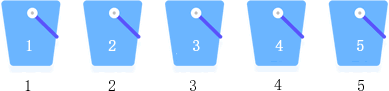
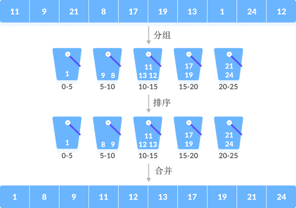
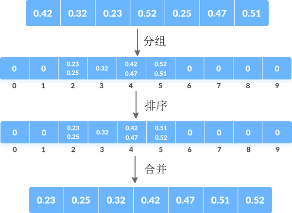

桶排序算法
桶排序（又称箱排序）是一种基于分治思想、效率很高的排序算法，理想情况下对应的时间复杂度为 O(n)。
接下来，我们系统地学习一下桶排序算法。
整个实现思路如下图所示：
桶排序算法中，待排序的数据量和桶的数量并不一定是简单的“一对一”的关系，更多场景中是“多对一”的关系，例如，使用桶排序算法对 {11, 9, 21, 8, 17, 19, 13, 1, 24, 12} 进行升序排序，实现过程如下图所示：
待排序序列中有 10 个元素，但算法中只用了 5 个桶，因此有些桶需要存放多个元素。实际场景中，我们可以自定义各个桶存放元素的区间（范围），比如上图中第一个桶存放 [0,5) 区间内的元素，第二个桶存放 [6,10) 之间的元素。
当存在“一个桶中有多个元素”的情况时，要先使用合适的排序算法对各个痛内的元素进行排序，然后再根据桶的次序逐一取出所有元素，最终得到的才是一个有序序列。
总之，桶排序算法的实现思路是：将待排序序列中的元素根据规则分组，每一组采用快排、插入排序等算法进行排序，然后再按照次序将所有元素合并，就可以得到一个有序序列。
使用桶排序算法解决此问题的 C 语言程序如下：
使用桶排序算法解决此问题的 Java 程序如下：
使用桶排序算法解决此问题的 Python 程序如下：
以上程序的输出结果均为：
接下来，我们系统地学习一下桶排序算法。
桶排序算法的实现思路
假设一种场景，对 {5, 2, 1, 4, 3} 进行升序排序，桶排序算法的实现思路是：- 准备 5 个桶，从 1~5 对它们进行编号；
- 将待排序序列的各个元素放置到相同编号的桶中；
- 从 1 号桶开始，依次获取桶中放置的元素，得到的就是一个升序序列。
整个实现思路如下图所示：

桶排序算法中，待排序的数据量和桶的数量并不一定是简单的“一对一”的关系，更多场景中是“多对一”的关系，例如，使用桶排序算法对 {11, 9, 21, 8, 17, 19, 13, 1, 24, 12} 进行升序排序，实现过程如下图所示：

待排序序列中有 10 个元素，但算法中只用了 5 个桶，因此有些桶需要存放多个元素。实际场景中，我们可以自定义各个桶存放元素的区间（范围），比如上图中第一个桶存放 [0,5) 区间内的元素，第二个桶存放 [6,10) 之间的元素。
当存在“一个桶中有多个元素”的情况时，要先使用合适的排序算法对各个痛内的元素进行排序，然后再根据桶的次序逐一取出所有元素，最终得到的才是一个有序序列。
总之，桶排序算法的实现思路是：将待排序序列中的元素根据规则分组，每一组采用快排、插入排序等算法进行排序，然后再按照次序将所有元素合并，就可以得到一个有序序列。
桶排序算法的具体实现
假设用桶排序算法对 {0.42, 0.32, 0.23, 0.52, 0.25, 0.47, 0.51} 进行升序排序，采用的分组规则是：将所有元素分为 10 组，每组的标号分别为 0~9。对序列中的各个元素乘以 10 再取整，得到的值即为该元素所在组的组号。

使用桶排序算法解决此问题的 C 语言程序如下：
#include <stdio.h>
#include <stdlib.h>
#define N 7 // 待排序序列中的元素个数
#define NBUCKET 6 // 桶的数量
#define INTERVAL 10 // 每个桶能存放的元素个数
//建立桶
struct Node {
float data;
struct Node *next;
};
void BucketSort(float arr[]);
struct Node *InsertionSort(struct Node *list);
void print(float arr[]);
int main() {
float array[N] = { 0.42, 0.32, 0.23, 0.52, 0.25, 0.47, 0.51 };
BucketSort(array);
print(array);
return 0;
}
// 桶排序，arr 为待排序序列
void BucketSort(float arr[]) {
int i, j;
struct Node **buckets;
// 创建所有桶
buckets = (struct Node **)malloc(sizeof(struct Node *) * NBUCKET);
// 设置每个桶为空桶
for (i = 0; i < NBUCKET; ++i) {
buckets[i] = NULL;
}
// 根据规定，将 arr 中的每个元素分散存储到各个桶中
for (i = 0; i < N; ++i) {
struct Node *current;
int pos = arr[i] * 10; //根据规则，确定元素所在的桶
//创建存储该元素的存储块，并连接到指定的桶中
current = (struct Node *)malloc(sizeof(struct Node));
current->data = arr[i];
current->next = buckets[pos];
buckets[pos] = current;
}
// 调用自定义的排序算法，对各个桶进行排序
for (i = 0; i < NBUCKET; ++i) {
buckets[i] = InsertionSort(buckets[i]);
}
// 合并所有桶内的元素
for (j = 0, i = 0; i < NBUCKET; ++i) {
struct Node *node;
node = buckets[i];
while (node) {
arr[j++] = node->data;
node = node->next;
}
}
}
// 自定义的排序算法，用于对各个桶内元素进行排序
struct Node *InsertionSort(struct Node *list) {
struct Node *k, *nodeList;
if (list == NULL || list->next == NULL) {
return list;
}
nodeList = list;
k = list->next;
nodeList->next = NULL;
while (k != NULL) {
struct Node *ptr;
if (nodeList->data > k->data) {
struct Node *tmp;
tmp = k;
k = k->next;
tmp->next = nodeList;
nodeList = tmp;
continue;
}
for (ptr = nodeList; ptr->next != 0; ptr = ptr->next) {
if (ptr->next->data > k->data)
break;
}
if (ptr->next != 0) {
struct Node *tmp;
tmp = k;
k = k->next;
tmp->next = ptr->next;
ptr->next = tmp;
continue;
}
else {
ptr->next = k;
k = k->next;
ptr->next->next = 0;
continue;
}
}
return nodeList;
}
void print(float ar[]) {
int i;
for (i = 0; i < N; ++i) {
printf("%.2f ", ar[i]);
}
}
使用桶排序算法解决此问题的 Java 程序如下：
import java.util.ArrayList;
import java.util.Collections;
public class BucketSort {
public static void bucketSort(float[] arr) {
int n = arr.length;
if (n <= 0)
return;
@SuppressWarnings("unchecked")
ArrayList<Float>[] bucket = new ArrayList[n];
// 创建空桶
for (int i = 0; i < n; i++)
bucket[i] = new ArrayList<Float>();
// 根据规则将序列中元素分散到桶中
for (int i = 0; i < n; i++) {
int bucketIndex = (int) arr[i] * n;
bucket[bucketIndex].add(arr[i]);
}
// 对各个桶内的元素进行排序
for (int i = 0; i < n; i++) {
Collections.sort((bucket[i]));
}
// 合并所有桶内的元素
int index = 0;
for (int i = 0; i < n; i++) {
for (int j = 0, size = bucket[i].size(); j < size; j++) {
arr[index++] = bucket[i].get(j);
}
}
}
public static void main(String[] args) {
float[] arr = { (float) 0.42, (float) 0.32, (float) 0.23, (float) 0.52, (float) 0.25, (float) 0.47,
(float) 0.51 };
bucketSort(arr);
for (float i : arr)
System.out.print(i + " ");
}
}
使用桶排序算法解决此问题的 Python 程序如下：
#桶排序算法，array 为待排序序列
def bucketSort(array):
bucket = []
# 创建空桶
for i in range(len(array)):
bucket.append([])
# 根据规则将所有元素分散到各个桶中
for j in array:
index_b = int(10 * j)
bucket[index_b].append(j)
# 分别对各个桶进行排序
for i in range(len(array)):
bucket[i] = sorted(bucket[i])
# 合并所有桶内的元素
k = 0
for i in range(len(array)):
for j in range(len(bucket[i])):
array[k] = bucket[i][j]
k += 1
return array
array = [0.42, 0.32, 0.23, 0.52, 0.25, 0.47, 0.51]
print(bucketSort(array))
以上程序的输出结果均为：
0.23, 0.25, 0.32, 0.42, 0.47, 0.51, 0.52
关注公众号「站长严长生」，在手机上阅读所有教程，随时随地都能学习。本公众号由C语言中文网站长亲自运营，长期更新，坚持原创。

微信扫码关注公众号